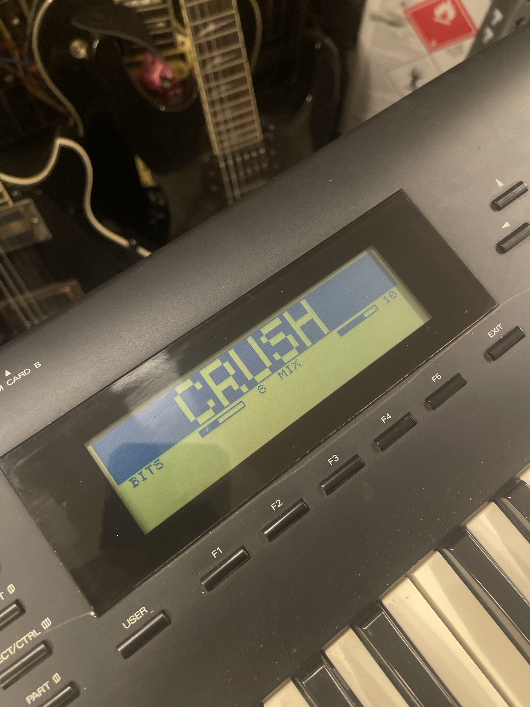
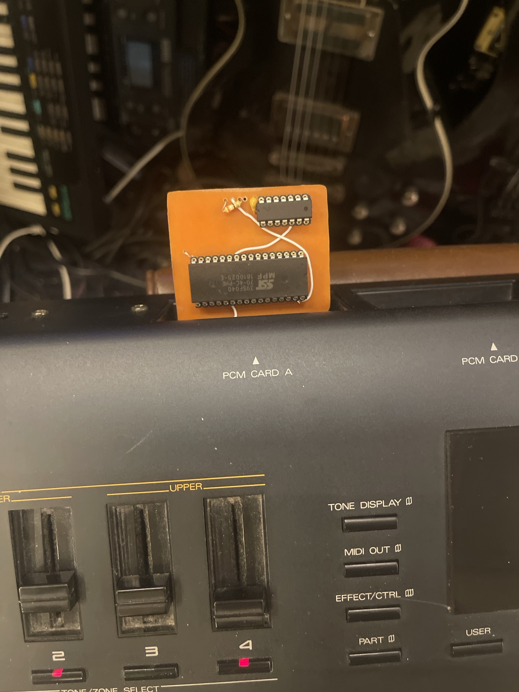
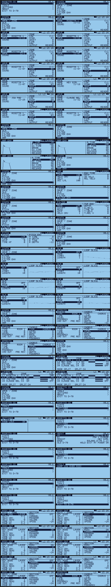

Roland D-70 Mods: Rosetta OS + new effects + custom cards
New firmware for the Roland D-70 (D70) Super LA synth: live synth pages, lo-fi effects on its own effects chip, and your own sounds on U-110 cards. Free, open source, and tested on a real D-70.
Live synth pagesEdit all four layers while you play: wave, zone, pitch, filter, amp, LFO. Envelope pages draw the curve.
DLM pageDifferential Loop Modulation on/off, mode, start and length, with a live view of the loop slice from wave ROM.
New effectsDrive, bit crush, decimator, rectifier and resonant LP / BP / HP filters, running on the D-70's own effects chip. One effect or two in a row, each with an OFF.
Big effects pagesThe effect name drawn huge from the D-70's own font, params as bar meters. Reverb has its own page.
Quick PlayOne sound by default, with a LAYERS row to stack up to four.
Common slidersThe four sliders become cutoff, resonance, attack and release on all four layers at once.
Custom U-110 cardsYour own samples on a U-110 card, picked from a BANK row on the layer page.
Keyboard fixKeys no longer die while you edit: the key scan chip is drained and repaired the way Roland's own recovery does it.
DSP LABRead and write the effects chip from a PC over MIDI SysEx, for building your own effects.
Hex Girl bootA boot animation on the big screen, then straight into the ROSETTA OS menu. Hold EXIT for the plain D-70.
Every feature above is confirmed on hardware. Built and waiting for its hardware test: an arpeggiator, a MIDI OUT page and knob lock.

The CRUSH effects page on a real D-70.

A home-milled U-110 card in PCM CARD A.

ROSETTA OS and SYNTH pages, rendered by the build checker from the real ROM code.
Custom cards
The D-70 reads U-110 sample cards. Build one with U-110 Studio: load your WAVs, burn the card, play. One catch found on hardware: the D-70 only takes a card whose header name starts SN-U110-, and U-110 Studio writes that name for you.
How it works
Read your own IC4 and IC9 EPROMs on a programmer such as a T48, plus the effects chip dump. Keep the originals.
Run Rosetta Patcher. It patches your dumps and writes the burn files.
Burn two 27C512s and fit them. Put the originals back and it's a stock D-70 again.
Every build runs through a simulator of the D-70's CPU and screen before it's written, so a bad patch is caught on the PC, not on the synth.